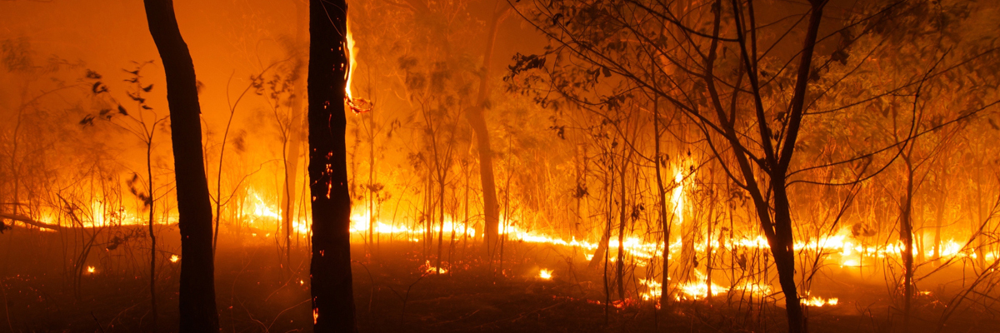

Australia has had a vast and extensive history of bushfires. Known as a ‘sunburnt country’, Australia has had over 50 notable bushfires since 1851. Over 800 Australians have been lost as a result of the fires that ravage our country each summer. Australia’s typical droughts, dry bushland, wide open area and questionably wise locals have caused all the bushfires that we locals come to expect and prepare for ever summer season.

Bushfires create an almost continual loop of damaging effects to the landscape.
A dry and particulary hot area that starts a bushfire, will cause nearby healthy areas of bush and grassland to also become dry and much more prone to bushfires. Starting a loop of dry land starting fires, creating more dryland, and starting more fires.
Not only are the bush and landscape affected by bushfires however. A census in 2020 found that nearly 80% of australians have been or are affected by bushfires in some way, either from loss of property, loss of life or financial damage.
There are countless forms of prevention for bushfires, but not all are as helpful or as readily avaliable as others.
One of the most widly used methods is that of back burning,
which is the process of using controlled burning and fires to remove dead bushland and remove fuel for bushfires.
Another method is just simple land management. Making sure that there isnt alot of dead bush during fire season,
and not starting fires during fire season.